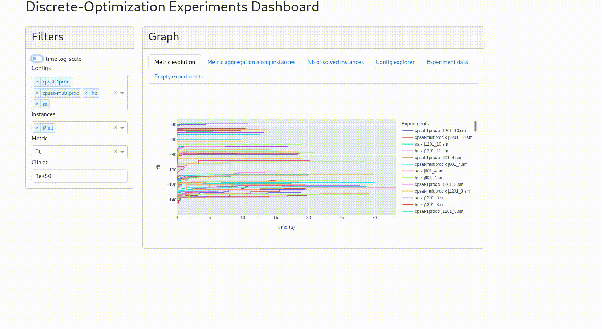

Dashboard
If you want to compare several solvers on a bunch of problem instances, we have you cover with the discrete-optimization dashboard!
This tool is used to summarize in a few graphs your experiments. The following steps are necessary:
Create a study by running different solver configs on several problem instances.
Store time-indexed metrics for each experiment like d-o fitness, internal model objective, bound, gap, …, with the necessary metadata (solver config, problem instance, solver final status).
Retrieve this data as a list of pandas dataframes.
Launch the dashboard to visualize
We enter into details in the next sections.

Prerequisites
For the dashboard to run you need to install “dash”, “plotly”, and “dash_bootstrap_components” libraries. If you want to make use of the hdf5 database presented below to store the data, you will also need “pytables”. All these libraries can be installed by choosing the extra “dashboard” when installing discrete-optimization:
pip install discrete-optimization[dashboard]
Launching a d-o study
We call here a study a set of experiments, where each experiment is the choice of
a solver config (class and hyperparameters)
a problem instance to solve
Experiment
Each experiment will stores some metadata plus some timeseries.
The d-o libary introduces in that purpose several classes:
SolverConfig: storing the solver class and the keyword arguments used by its constructor,init_model(), andsolve().Experiment: stores the solver config, the instance id, the solver status and the metrics dataframe. You can (and you should) associate a name to each solver config (for an easier understanding of the dashboard). The easiest way to generate the experiment is by using its alternate constructorExperiment.from_solver_config().
import pandas as pd
from discrete_optimization.generic_rcpsp_tools.solvers.ls import (
LsGenericRcpspSolver,
LsSolverType,
)
from discrete_optimization.generic_tools.study import (
Experiment,
SolverConfig,
)
xp_id = 0 # should be unique across a given study
instance = "j1201_10.sm" # identifier for the problem instance
config_name = "hc"
solver_config = SolverConfig(
cls=LsGenericRcpspSolver,
kwargs=dict(ls_solver=LsSolverType.HC, nb_iteration_max=10000),
)
# solve + metrics retrieval as pandas.DataFrame
problem = ... # e.g. using a filepath based on instance identifier
solver = solver_config.cls(problem, **solver_config.kwargs)
solver.init_model(**solver_config.kwargs)
solver.solve(**solver_config.kwargs)
status = solver.status_solver
reason = "" # string used to store the reason of an error during solve
metrics = pd.DataFrame(...) # see next section how to retrieve metrics
xp = Experiment.from_solver_config(
xp_id=xp_id,
instance=instance,
config_name=config_name,
solver_config=solver_config,
metrics=metrics,
status=status,
reason=reason,
)
Stats retriever callbacks
You can make use of the stats retrievers callbacks to store the metrics timeseries, i.e. BasicStatsCallback or
StatsWithBoundsCallback (if you are using a solver implementing the mixin BoundsProviderMixin like cpsat solvers).
They both have the method get_df_metrics() to retrieve the stored metrics (fitness, best objective bound, …) as a pandas
DataFrame.
from discrete_optimization.generic_tools.callbacks.stats_retrievers import (
BasicStatsCallback,
StatsWithBoundsCallback,
)
stats_cb = BasicStatsCallback() # or StatsWithBoundsCallback() if solver provides internal objective value and bound?
result_store = solver.solve(
callbacks=[
stats_cb,
],
**solver_config.kwargs,
)
metrics = stats_cb.get_df_metrics()
Database
In order to store each experiment, a dedicated database Hdf5Database
has been implemented making use of hdf5 format.
It exposes several methods, in particular:
get_new_experiment_id(): which allows to get a unique id for each experiment to be storedstore(xp): which stores a given experimentload_results(): which returns the list of experiments stored so far as a list of pandas dataframes whith their metadata stored in theirattrsdictionary attribute. This is the format which will be needed later by the dashboard.
To avoid locking the database, it is best practice to
use it inside a
withstatement (to be sure to close it even in case of errors)to open it just when needed (at the end of the experiment to store it)
with Hdf5Database(database_filepath) as database:
xp_id = database.get_new_experiment_id()
xp = Experiment.from_solver_config(
xp_id=xp_id,
instance=instance,
config_name=config_name,
solver_config=solver_config,
metrics=metrics,
status=status,
reason=reason,
)
database.store(xp)
or
with Hdf5Database(database_filepath) as database:
results = database.load_results()
Full example
Putting all that together, we got an example of such a study on rcpsp problems which makes use of the database, the stats callbacks and the experiments related classes:
import logging
import os
import pandas as pd
from discrete_optimization.generic_rcpsp_tools.solvers.ls import (
LsGenericRcpspSolver,
LsSolverType,
)
from discrete_optimization.generic_tools.callbacks.loggers import NbIterationTracker
from discrete_optimization.generic_tools.callbacks.stats_retrievers import (
BasicStatsCallback,
StatsWithBoundsCallback,
)
from discrete_optimization.generic_tools.cp_tools import ParametersCp
from discrete_optimization.generic_tools.do_solver import StatusSolver
from discrete_optimization.generic_tools.study import (
Experiment,
Hdf5Database,
SolverConfig,
)
from discrete_optimization.rcpsp.parser import get_data_available, parse_file
from discrete_optimization.rcpsp.solvers.cpsat import CpSatRcpspSolver
logging.basicConfig(level=logging.INFO)
study_name = "rcpsp-study-0"
overwrite = False # do we overwrite previous study with same name or not? if False, we possibly add duplicates
instances = [os.path.basename(p) for p in get_data_available() if "sm" in p][:5]
p = ParametersCp.default_cpsat()
p.nb_process = 10
solver_configs = {
"cpsat-1proc": SolverConfig(
cls=CpSatRcpspSolver,
kwargs=dict(
time_limit=20,
parameters_cp=ParametersCp.default(),
),
),
"cpsat-multiproc": SolverConfig(
cls=CpSatRcpspSolver,
kwargs=dict(
time_limit=20,
parameters_cp=p,
),
),
"sa": SolverConfig(
cls=LsGenericRcpspSolver,
kwargs=dict(ls_solver=LsSolverType.SA, nb_iteration_max=10000),
),
"hc": SolverConfig(
cls=LsGenericRcpspSolver,
kwargs=dict(ls_solver=LsSolverType.HC, nb_iteration_max=10000),
),
}
database_filepath = f"{study_name}.h5"
if overwrite:
try:
os.remove(database_filepath)
except FileNotFoundError:
pass
# loop over instances x configs
for instance in instances:
for config_name, solver_config in solver_configs.items():
logging.info(f"###### Instance {instance}, config {config_name} ######\n\n")
try:
# init problem
file = [f for f in get_data_available() if instance in f][0]
problem = parse_file(file)
# init solver
stats_cb = StatsWithBoundsCallback()
if config_name in {"sa", "hc"}:
stats_cb = BasicStatsCallback()
solver = solver_config.cls(problem, **solver_config.kwargs)
solver.init_model(**solver_config.kwargs)
# solve
result_store = solver.solve(
callbacks=[
stats_cb,
NbIterationTracker(step_verbosity_level=logging.INFO),
],
**solver_config.kwargs,
)
except Exception as e:
# failed experiment
metrics = pd.DataFrame([])
status = StatusSolver.ERROR
reason = f"{type(e)}: {str(e)}"
else:
# get metrics and solver status
status = solver.status_solver
metrics = stats_cb.get_df_metrics()
reason = ""
# store corresponding experiment
with Hdf5Database(
database_filepath
) as database: # ensure closing the database at the end of computation (even if error)
xp_id = database.get_new_experiment_id()
xp = Experiment.from_solver_config(
xp_id=xp_id,
instance=instance,
config_name=config_name,
solver_config=solver_config,
metrics=metrics,
status=status,
reason=reason,
)
database.store(xp)
Launching the d-o dashboard
Once your study is done (or at least some results have been stored), you just have to
retrieve your results
initialize a
Dashboardobject with itrun the dashboard
It gives:
from discrete_optimization.generic_tools.dashboard import Dashboard
from discrete_optimization.generic_tools.study import Hdf5Database
study_name = "rcpsp-study-0"
# retrieve data
with Hdf5Database(f"{study_name}.h5") as database:
results = database.load_results()
# launch dashboard with this data
app = Dashboard(results=results)
app.run()
By default, the dashboard will then be available at http://127.0.0.1:8050/.
You will find on a left panel the different filters:
solver configs
instances (“@all” alias selecting all the instances)
metric to show
clip at: to avoid outliers, the data whose absolute value is above it are removed
on-off buttons for
time in log-scale
transposing the graph (solved instances graph only)
On the main panel, you have several tabs corresponding to graph type, or tables:
“Metric evolution”: the curve for each experiment of the chosen metric
“Metric aggregation along instances”: the metric is aggregated on selected instances. A point is drawn for a given time on the curve of a given config, only if at least a point occurred before for each filtered instances. The table below gives the last point of each curve (so the aggregated metric at solve end of each experiment)
“Nb of solved instances”: the graph shows the time evolution of the number of solved instances (i.e. whose solver status is “optimal”) On the graph the % is relative to the total number of experiments done for the solver config. On the table below, you get this total number of experiments versus the number of experiments finishing with solver status “optimal”.
“Config explorer”: displays the solver class and hyperparameters corresponding to each solver config name.
“Experiment data”: displays the raw timeseries for each experiment
“Empty experiments”: list the experiments with no data and the potential reason (timeout or raised error)